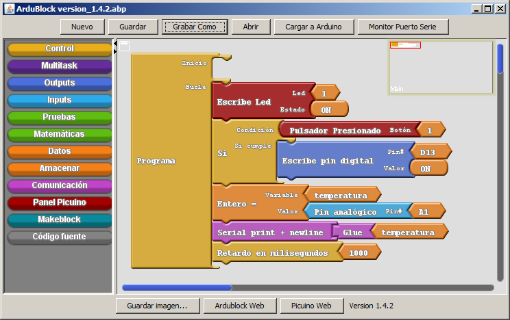

1. Introducció a Ardublock¶
Ardublock és una eina per a Arduino que permet programar amb blocs gràfics. Té com a objectiu facilitar la programació als usuaris sense experiència prèvia, simplificant la tasca de portar programes amb un entorn gràfic senzill.

És una eina de l’entorn de programació d’Arduino i no pot funcionar per separat.
La versió que es subministra en aquest lloc web és una versió modificada de Ardublock original, en la qual els colors, els menús i el nombre de blocs s’han simplificat amb l’objectiu de ser més fàcil d’utilitzar.
Instal·lació Ardublock¶
Per instal·lar la versió més recent d’Ardublock-Picuino, heu de seguir els passos següents:
Descarregueu LA: Descarregueu: eina Arcublock-Picuino <_downloads/arduck-picuino.zip>
Copieu el fitxer al directori Arduino. El directori es pot trobar a l’entorn Arduino, prement el menú:
`` Arxiu ... preferències ... Ubicació del projecte ''.
Descomprimeix el fitxer al directori d'Arduino.
Tancar i reobrir l’entorn d’Arduino. La nova eina ha d’aparèixer al menú:
`` Eines ... ardublock ''
Instal·lació de llibreries auxiliars per a Arduino¶
Aquestes biblioteques permeten a la placa Arduino controlar els perifèrics com ara un panell de visualitzadors LCD o emissors i receptors d’infrarojos.
Per instal·lar totes les llibreries alhora **, heu de seguir els passos següents:
Descarregueu l'arxiu amb les llibreries per a Arduino. <../../_ static/descàrregues/arduino-libraries.zip>`__
Copieu el fitxer al directori Arduino. El directori es pot trobar a l’entorn Arduino, prement el menú:
`` Arxiu ... preferències ... Ubicació del projecte ''.
Descomprimeix el fitxer al directori d'Arduino.
Tancar i reobrir l’entorn d’Arduino. Les noves llibreries haurien d’aparèixer al menú:
`` Programa ... Inclou la llibreria ... '
Per instal·lar llibreries individuals mitjançant l’entorn Arduino, podeu llegir el següent enllaç a: Ref: Com afegir una llibreria a l’entorn Arduino <den-library>.
Gestió bàsica d’Arcublock¶
** Obriu l’entorn Arduino: ** Per obrir Ardublock, primer cal tenir l’entorn Arduino obert, fent clic a la icona següent.

** Connecteu el port dret: ** Al menú de l'eina ... port ... heu de seleccionar el port al qual està connectada la placa Arduino. Per a més informació, vegeu: Ref: Solució de problemes amb Arduino <resolució de problemes> `
** Obrir Ardublock: ** Al menú Arduino Environment Tools apareixerà la paraula Arcublock. En fer -hi clic, l’entorn apareixerà sense cap programa.
** Realitzeu el programa: ** Desplaçant els blocs dels menús de l'esquerra per connectar -los amb el bloc del programa.
** Blocs duplicats: ** Premant sobre un bloc amb el botó del ratolí dret, apareix l’opció “clon” que duplica el bloc i tots els blocs que pengen a sota.
** Afegiu comentaris: ** fent clic a un bloc amb el botó dret del ratolí, apareix l’opció “Afegir comentari” que us permet escriure un text que expliqui la funció del bloc. El comentari es pot ocultar o mostrar prement la icona de la pregunta "?" A l’esquerra del bloc.
** Organitzar els blocs: ** fent clic a una zona buida amb el botó dret del ratolí, apareix l’opció d’organitzar tots els blocs. Premant -ho, tots els blocs s’organitzen de manera ordenada.
** Eliminar blocs no desitjats: ** Displaçant els blocs a l'esquerra a la zona dels menús, els blocs desapareixeran.
** Carregueu el programa a Arduino: ** fent clic al botó superior 'Carrega a Arduino' Els blocs es transformaran en un codi que es carregarà a la placa Arduino connectada. Si és el primer programa que es carrega, l’entorn demanarà confirmació per desar el programa. Heu de respondre "desar".
Aquest procés no és immediat, heu d’esperar uns segons fins que s’acabi.
** Desa el programa Arcublock: ** prement el botó superior "Desa com a" apareixerà una imatge per escriure el nom del programa i la seva ubicació.